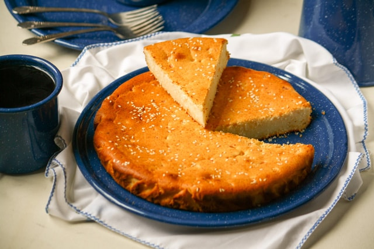

Salvadoran Quesadilla

Salvadoran Quesadilla
Quesadilla Salvadorena is a gluten-free cheese pound cake that is enjoyed throughout El Salvador with a cup of coffee for breakfast or as a snack
Ingredients
- 1 c cotija cheese
- 1 c cottage cheese
- 1/2 c queso fresco
- 1/2 crema salvadorena
- 1/2 c milk
- 1/2 whipping cream
- 2 eggs
- 1/2 c sugar
- 2 c rice flour
- 1 tsp baking powder
- 1/2 c melted butter
- 2 tsp sesame seeds
Steps
- Preheat your oven to 350F and grease a 9x13 baking pan or 2-9 inch round pans
- Using an electric blender, blend cotija, cottage, queso fresco, sour cream, milk, and whipping cream. Set aside.
- Separate the egg whites from the yolks. Beat egg whites until soft peak. Add the sugar, 2 tsp at a time, blending as you add. Add the egg yolks and mix well.
- To the egg mixture, add 1 cup of rice flour and 1 teaspoon of baking powder. Mix.
- Add the melted butter and the remaining 1 cup of rice flour. Mix well.
- Add the cheese mixture and beat until all the ingredients are incorporated
- Pour the batter into the prepared pan. Sprinkle with sesame seeds.
- Bake in preheated oven for 40-45 mins until deeply golden
- Once baked, remove from oven and let cool for 10 mins before removing quesadilla from the pan